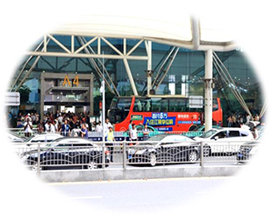
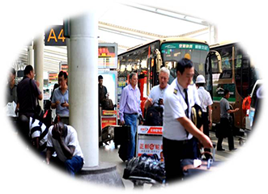

机场旅客无论搭乘任何交通工具，均能看到停靠的机场巴士，可100%覆盖机场旅客
 上海5条线路 58辆机场巴士
广州11条线路 86辆机场巴士
4次/机场旅客平均每人每日每车见到广告次数
14次/平均每车每日进出机场次数
3.5小时/平均每车每天停留机场时间
38，050人/平均每车每天接触机场人数
131，800人/平均每车每天接触机场、市中心总人数
● 13条线路、136辆机场巴士来回穿梭于机场-市中心，广告画面流动于整个城市。
● 机场、市中心多样性受众，且能主动影响受众。
机场内媒体形式静止、单纯被动的影响旅客，不仅无法全覆盖旅客而且受众较单一。
● 广告位置高0.5-3米之间，与成人视线平行。
● 广告画面符合人体工程学的最佳可视角度
● 广告关注度高
普遍高于5米以上，旅客头部需上仰45度以上方能看见。
● 高3.7m，长12m
● 广告面积是市公交的2-3倍
● 视觉冲击力强
巴士普遍高3m，长9m，广告面积比机场巴士少40%
● 美国进口3M2048材料，是最好广告制作材料之一。
● 麗寳进口防紫外光膜
● 广告画面鲜艳、持久
市公交普遍使用国产材料制作，色彩饱和度较低，容易老化。
● “机场-市中心” 每日往返7个来回， 机场日均停留3.5小时，每次停靠30-40分钟。
● 干扰少，广告画面大，广告内容记忆度高。
普通巴士在市区车站每次停靠约10-30秒，周边干扰较多，较难接收消化广告信息。